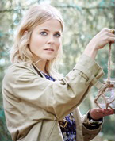

Ilse de Lange
Ilse de Lange is geboren op 13 mei 1977 in Almelo. Ze begon al op jonge leeftijd met playbacken en deed mee met wedstrijden, die ze ook vaak won. Na een tijdje begon Ilse met zingen. Ze trad in 1994 op voor de Nederlandse Country Music Awards, maar dit was niet genoeg voor een platencontract. Ilse haar doorbraak kwam in 1996. Ze was naar Nashville (VS) gegaan met de groep Cash on Delivery waar Ilse toen een deel van uit maakte. Ze heeft samen met Barry Beckett het album Word of Hurt opgenomen. Doordat Ilse haar album in de country-hoofdstad van de wereld had opgenomen, raakte Ilse bekend in Nederland...